After completing this lesson, you’ll be able to:
Even if a workspace ran to completion without warnings or errors, it does not follow that the output matches what is expected or required. For whatever reason, the workspace may be producing data incorrectly. We can determine this by inspecting the translation output.
To inspect your output, view it in Visual Preview or the destination application.
You can inspect several aspects of data, including:
When encountering problems, you should inspect your data to see if its components are incorrect.
This stage is solely to determine if there are any problems.
A workspace feature count refers to the numbers shown on each connection once a translation is complete:
Once you find an error or problem, feature counts help us identify where that problem occurred.
In the above screenshot, if the Clipper output is incorrect, you should inspect the prior feature counts to see if any counts look wrong. Perhaps you know that there are seven neighborhoods, but the feature count shows only six.
You can check several things when the number of output features is incorrect.
If you get zero output, and the feature counts show that all features entered a transformer, but none emerged, then you can be reasonably confident that the transformer is the cause of the problem:
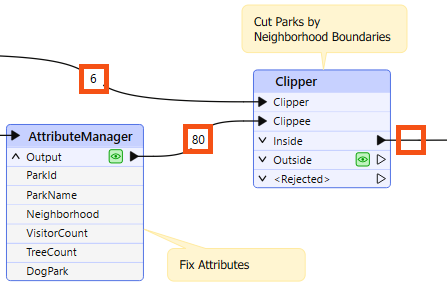
For example, 80 features enter the Clipper transformer (to be clipped against a single boundary), but none emerge. The Clipper transformer is almost certainly the cause of any incorrect output.
The transformer does not reject the data; it merely does not pass the test expected. It's possible that Clipper and Clippee don't occupy the same coordinate system; hence, one does not fall inside the other.
Turning on feature caching helps to confirm this to be the case:
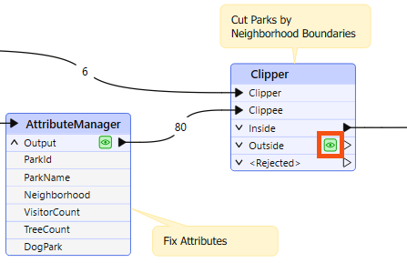
Alternatively – and this is a common cause of missing features – the author has connected the wrong output port! For example, this user connected the StatisticsCalculator Summary output port when they wanted the features from the Complete port:
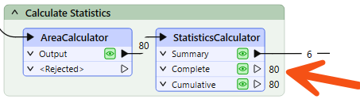
You can observe feature counts and feature caches to ensure you are getting the expected number of features and they look correct.
Sometimes, when features go missing, they are rejected by a transformer. Many transformers include a <Rejected> port to output these invalid features:

Remember, features are automatically counted and stored on a <Rejected> port, even if feature caching is off.
As an additional benefit, the rejected features will often include a rejection code attribute explaining the problem:

Simply reading a rejection code can often help you identify the problem. Please refer to the transformer documentation for more information if it does not.
If the feature counts cannot help pinpoint a problem's location, the next step is inspecting data at crucial translation stages.
Generally, issues in an output dataset occur when:


Word about Frank's debugging skills has spread around the office. Amar is having some problems with his workspace and sends it to Frank for debugging.
Frank opens the starting workspace (C:\FMEData\Workspaces\UseDataIntegrationBestPractices\use-output-and-feature-counts-to-identify-problems.fmw) in FME Workbench (2025.0.1 or later).
He runs it to generate caches.
The workspace doesn't run for very long before stopping due to an error. Frank will use the log to determine what caused the problem.
First, he clicks OK to dismiss the Unexpected Input window.
The Unexpected Input window appears when FME reads data that is not included in the workspace. This can happen with formats like KML, where the entire dataset is read even if only one feature type is present on the Canvas. It can be safely ignored once you confirm you have all the source data you need on the Canvas.
Next, he clicks the button to filter the log to only show errors:
The error message comes from a rejected feature:
The below feature caused the translation to be terminatedJSONExtractor_<Rejected> (TeeFactory): JSONExtractor_<Rejected>: Termination Message: 'JSONExtractor output a <Rejected> feature. To continue translation when features are rejected, change 'Workspace Parameters' > Translation > 'Rejected Feature Handling' to 'Continue Translation''
This error itself isn't very helpful. We need to find the fme_rejection_code attribute on the rejected feature for more information.
So, Frank finds the JSONExtractor on the Canvas. He sees the <Rejected> port has one feature, so he clicks the feature cache to inspect it:
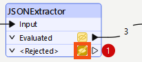
He finds the fme_rejection_code attribute in the far right of Table View and notes its value: NO_RESULT. He also notes that the attribute Geom has a value of <null>.
He needs to find out why the JSONExtractor did not have a result for this feature. So he opens it to view its parameters.
This transformer reads JSON from the Geom attribute and then extracts latitude and longitude coordinates using a JSON Query. That means it uses the value of the Geom attribute:
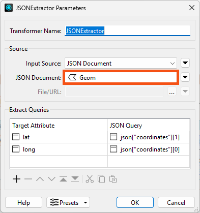
Because the rejected feature had a value of <null> for Geom, the transformer was not able to extract coordinates. That is very likely the cause of the rejection.
To confirm this, Frank inspects the JSONExtractor's Evaluated cache. The transformer did not finish running, but it did successfully evaluate three features before the translation terminated.
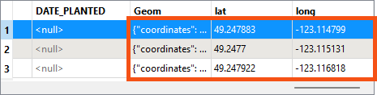
The successfully processed features have a value for Geom, and therefore values for lat and long.
This confirms the problem is the features with a <null> value for Geom.
To fix this, Frank can simply filter these out using a Tester before they get to the JSONExtractor.
Frank adds a Tester after the CSV reader feature type and configures it to test for Geom - Attribute Has a Value:
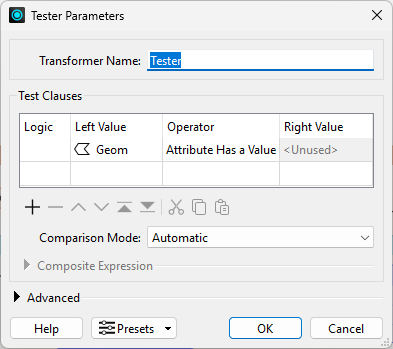
He reruns the workspace and the JSONExtractor no longer outputs rejected features.
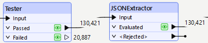
Although the workspace now runs without errors, the output is still incorrect.
Amar expects the output of the Clipper's Inside port to contain all the trees within the neighborhoods specified in the Neighborhoods dataset, but that port is empty:
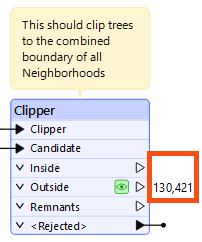
Instead, all of the features are coming out of the Outside port, meaning that the Clipper did not detect any overlap between the tree points and the neighborhood polygon.
Why might this be?
The most common problem would be mismatched coordinate systems, so Frank decides to investigate that first.
At this point in the course, you should be able to debug this step yourself. Try to confirm if coordinate system mismatch is the problem here before proceeding.
Frank clicks the Neighborhoods feature cache and Ctrl+clicks (or Cmd+clicks on Mac) the Reprojector's Reprojected feature cache to inspect them both at the same time.
He selects a Neighborhoods feature and finds the Coordinate System in the Feature Information Window. It shows the data is in LL84:
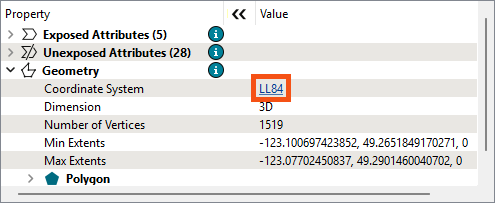
Then he selects a Reprojector feature and finds the data is in UTM83-10, confirming there is a coordinate system mismatch:
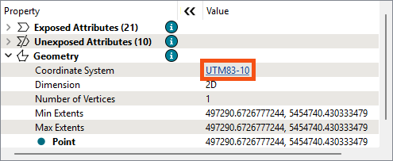
Pop quiz: should Frank remove the Reprojector entirely so both streams of features are in LL84, or should he duplicate the Reprojector to reproject the Neighborhoods data so it is also in UTM83-10?
Frank duplicates the Reprojector transformer (right-click > Duplicate) and adds it to the Neighborhoods stream:
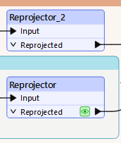
It's better to conduct spatial analysis using projected coordinate systems, so he chooses to use UTM for both streams. Amar can always reproject back to LL84 at the end if he needs to.
Frank runs the workspace again to confirm the Clipper's Inside port has features, as expected:
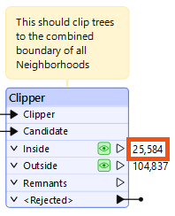
It does. Another successful debugging operation. Frank better be careful, or all his colleagues are going to rely on him for debugging! He decides to hold a workshop on debugging with FME using his new knowledge so he can get some of his own work done.